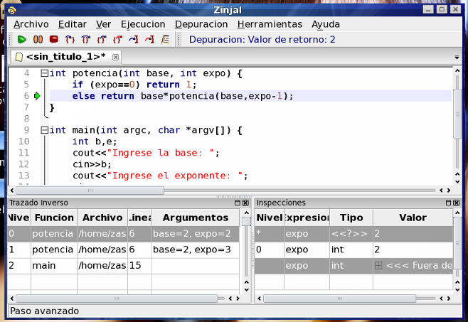

Finalmente, para continuar la ejecución, tenemos ahora nuevas alternativas. Una particularmente útil es indicarle al depurador que debe continuar ejecutando hasta salir del ámbito actual, es decir, hasta finalizar la función (siempre considerando la función del nivel 0). Para esto debe utilizar step out (Shift+F6). Al utilizar esta acción, en la barra de estado de la depuración (el texto en azul a la derecha de la barra de herramientas) encontrará el valor de retorno que arrojó la función al finalizar.
Pruebe este método seleccionando el nivel 0 en el trazado inverso (con doble click) y presionando Shift+F6. Observe que en el trazado inverso hay ahora un nivel menos, y en la parte superior izquierda de la pantalla se le indica que la función finalizó retornando el entero 2.

El cursor de ejecución queda posicionado en la llamada a la función que acaba de finalizar.
Volver... Siguiente Tutorial...